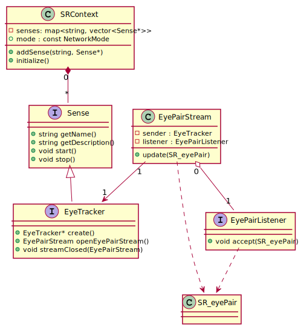
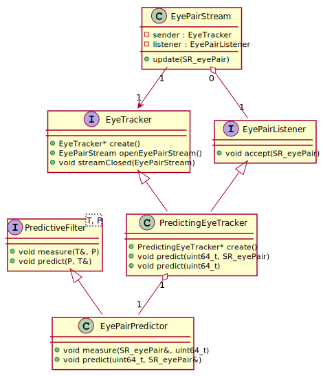

|
LeiaSR SDK 3e4093ae v1.34.8.37806 2025-10-23T12:33:42Z
Stable
|
|
LeiaSR SDK 3e4093ae v1.34.8.37806 2025-10-23T12:33:42Z
Stable
|
The user only has to interact with fixed interfaces offering different features. The EyeTracker interface is one of the most essential SR components. In this class diagram, only the user-facing classes are visualized.
SRContext is an essential element of any SR application, it maintains a list of all SR components that are in use and cleans them up when the application ends. It also allows different components of the application to share the same Sense implementations.Sense is an interface used by the SRContext to keep track of any input or output devices.EyeTracker is an interface providing access to eyetracker data.EyePairStream connects EyeTracker implementations with user defined EyePairListener implementations.EyePairListener is an interface to be implemented by any components of the user's application that want to receive eyetracker data.SR_eyePair defines the actual eyetracker data.
The SR_eyePair is at the center of the EyeTracker interface, this is what applications can subscribe to.
Application developers should define how to handle the EyeTracker data by implementing an EyePairListener. It is advisable to include an InputStream<SR::EyePairStream> member, this will come into play when the actual eye tracker is constructed.
To get access to eyetracker data, users will have to construct an SRContext and call the static factory function EyeTracker::create as follows:
Then we need to construct a listener that follows the desired way of processing the data. By calling set on the InputStream<SR::EyePairStream> field we ensure that the stream is destructed correctly when the EyePairListenerImplementation goes out of scope. When everything is set up context.initialize() starts using any newly constructed streams to listeners.
If the main function of our application returns, all deconstructors will be called and we will no longer receive data. We should ensure that the application remains open as long as we want.
To ensure that your application is as responsive as possible a specific EyeTracker implementation can be constructed. The following is a short description of relevant classes.
PredictingEyeTracker is an implementation of the EyeTracker interface that offers more control over the filtering of the output values to the application developer.EyePairPredictor is an implementation of the PredictiveFilter<SR_eyePair, uint64_t> interface that defines how SR_eyePair data is filtered to provide accurate predictions.
The PredictingEyeTracker::create function can be used in exactly the same way as the EyeTracker::create function but the PredictingEyeTracker will only provide output to connected EyePairListener instances when one of the predict functions is called.
An application might define the same type of EyePairListener.
The EyeTracker::create call is replaced with PredictingEyeTracker::create.
To trigger the listener to receive new data the predict function can be called as follows.
In the above example, the work associated with filtering will be executed asynchronously. This can be useful to increase parallelization but might be difficult to control.
Since the PredictingEyeTracker is also an EyePairListener implementation. This still maintains a similar structure in your application. The developer does not have to define their own listener implementation in this case.